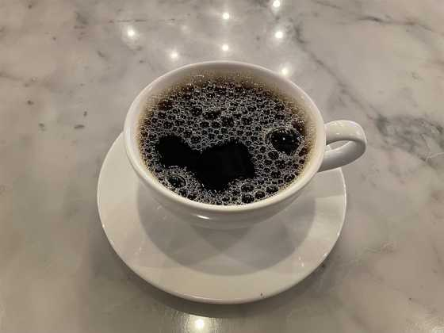
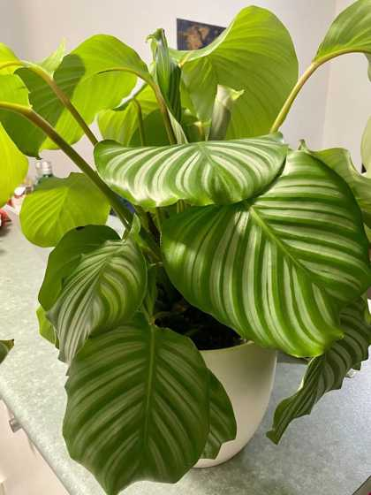

お店の由来・想い
三太郎は、2025年10月1日に大村市片町にオープンしたカレーカフェです。店主の谷口雄亮さんが、スパイスを自ら挽いて手づくりするカレーを出していると、地元メディアで紹介されています。
同じ場所では、時間帯や曜日によって別のお店が営業するスタイルです。報道時点(2025年10月)の情報は次のとおりです。
- 平日 11:00〜15:00 カレーカフェ 三太郎
- 平日 15:00〜24:00 CAKE CAFE Yuki(ケーキカフェ)
- 土日祝 plus cafe(昼)/ CAKE CAFE Yuki(夕方以降)
店名「三太郎」の意味や由来は、確認できた資料には載っていません。そのためここでは触れません。営業日・時間は変わることがあるため、最新はInstagramでご確認ください。
口コミ(イメージ例)
以下は制作側が作成したイメージ例で、実在のお客様の声ではありません。
イメージ例
お昼休みに立ち寄りました。スパイスの香りに食欲がわいて、あっという間に食べ終えました。
イメージ例
お店の方の雰囲気がやわらかくて、ゆっくり過ごせました。また平日のランチに行きたいです。
イメージ例
食後にケーキとコーヒーまで楽しめるのがうれしいです。ひとりでも入りやすいと思います。


アクセス
- 店名
- カレーカフェ 三太郎
- 住所
- 〒856-0833 長崎県大村市片町31
- 電話
- 準備中
- 営業時間
- 準備中(2025年10月時点の報道では平日11:00〜15:00)
- 定休日
- 準備中(同報道では土日祝)
Instagram(@santaro.25.10.1)で最新情報をご確認ください。
写真クレジット
写真はすべてフリー素材のイメージです。各写真の下に作者・題名・ライセンス・出典を記載しています。ライセンスの詳細は creativecommons.org をご覧ください。このサイトは制作側が作成した試作サンプルです。